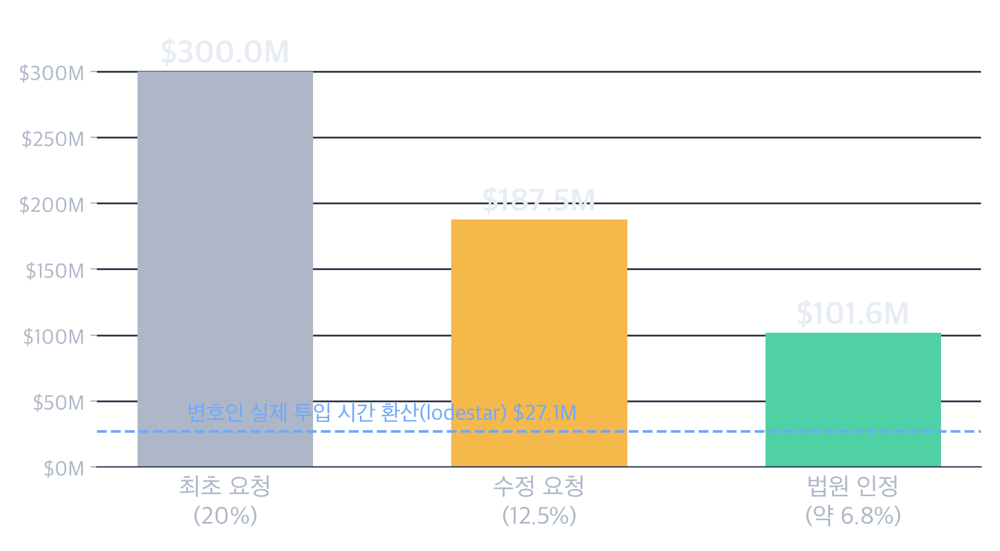

앤트로픽 vs 바츠
AI 학습은 공정이용인가
법원은 하나의 사건을 세 가지 이용으로 나눠 판단했다
결론은 “학습은 괜찮지만, 해적판을 모아 둔 것은 안 된다.” 이 판단 이후 앤트로픽은 15억 달러에 합의했다.
LLM 학습
책을 복제해 클로드의 언어모델을 학습시킨 것
구매한 종이책의
디지털화
중고 종이책을 사서 스캔하고 원본은 폐기
해적판으로 만든
중앙 도서관
해적 사이트에서 700만 권 이상을 받아 “영원히” 보관
누가, 누구를 상대로
작가 3명이 “내 책을 허락 없이 AI 학습에 썼다”며 앤트로픽을 상대로 집단소송을 제기했다(2024년 8월).
안드레아 바츠 · 찰스 그레이버 · 커크 월리스 존슨
+ 저작권 관리 법인 Bartz Inc., MJ + KJ Inc.
총 9권이 해적판·구매본 경로로 복제되었다
앤트로픽 (Anthropic PBC)
2021년 1월 OpenAI 출신이 설립. 대화형 AI 클로드 운영, 연 매출 10억 달러 이상
캘리포니아 북부 연방지방법원
공정이용: 윌리엄 알섭 판사
합의 최종승인: 아라셀리 마르티네스-올긴 판사
책을 모은 두 경로가 판결을 갈랐다
경로 ① 해적판 다운로드 · 합계 700만 권 이상

CEO 다리오 아모데이: 책을 살 곳은 많았지만 “법적·실무적·사업적 수고(slog)”를 피하려 했다
경로 ② 종이책 구매 후 스캔
- 2024년 2월 구글 북스 출신 톰 터비 영입
- 출판사 라이선스 협상은 흐지부지
- 중고 종이책 수백만 권을 수백만 달러에 구매
- 제본 해체 → 스캔 → 종이 원본 폐기
두 경로 모두 사내 중앙 도서관으로. 방침은 “모든 것을 영원히 보관”
책 한 권은 학습 과정에서 네 번 복제된다
소송 경과: 제소부터 합의 최종승인까지 23개월
공정이용부터
→ 재판 회부
허락 없이 복제해도 ‘공정’하면 침해가 아니다
미국 저작권법 제107조. 앤트로픽은 복제 사실은 다투지 않고 “그 복제는 공정이용”이라고 항변했다. 법원은 네 요소를 종합해 사건별로 판단한다.
이용의 목적과 성격
새로운 목적을 더한 변형적 이용이면 유리
저작물의 성격
사실·정보 중심이면 유리, 창작성이 높으면 불리
이용된 양과 중요성
목적에 비춰 필요한 만큼이면 유리
시장에 미치는 영향
연방대법원: “가장 중요한 단일 요소” (Harper & Row, 1985)
한국 저작권법 제35조의5는 미국 제107조를 모델로 했다
| 미국 제107조 | 한국 제35조의5 제2항 |
|---|---|
| ① 이용의 목적과 성격 | 1. 이용의 목적 및 성격 |
| ② 저작물의 성격 | 2. 저작물의 종류 및 용도 |
| ③ 이용된 부분의 양과 중요성 | 3. 이용된 부분이 차지하는 비중과 중요성 |
| ④ 잠재적 시장·가치에 미치는 영향 | 4. 현재 또는 잠재적 시장·가치에 미치는 영향 |
한국도 TDM 면책 규정 없음
미국처럼 AI 학습 분쟁은 일반 공정이용 조항으로 판단할 가능성이 크다 → 미국 판결이 중요한 참고자료
EU는 다른 길
저작권자가 거부(옵트아웃)하지 않은 저작물의 TDM 허용. AI법은 범용 AI 제공자에게 옵트아웃 준수 의무
출발점: 앤트로픽의 ‘이용’은 하나인가, 셋인가
Warhol 판결(2023): 같은 저작물도 여러 방식으로 이용될 수 있고, 각 이용을 따로 평가해야 한다.
“용도는 LLM 학습 하나”해적판 다운로드도 학습을 위한 과정
“도서관 구축 + 학습”종이책 디지털화도 별도 침해
법원: 학습에 안 쓸 책도 “영원히” 보관했고 수백 명이 제한 없이 접근 → 도서관 구축은 그 자체로 별개의 이용
세 가지 이용 × 4요소 판정표
“작가를 꿈꾸는 독자처럼”
출력은 쟁점 아님
작가들은 클로드가 자기 책을 출력했다고 주장하지 않았다. “출력이 침해였다면 다른 사건”
문체는 보호 대상 아님
여러 명작에서 문법·구성·문체를 배워 섞는 것은 침해가 아니다 (§102(b))
Ross 판결과 구별
판례 검색 AI(비생성형)와 달리 새 글을 쓰는 생성형 AI는 변형적
경쟁작 증가는 무관
“아이들에게 글쓰기를 가르치면 경쟁작이 는다”는 불평과 같다
사본이 늘지 않았다: 하나가 다른 하나를 대체했다
판사는 “도서관도 학습의 일부”라는 앤트로픽 주장은 받아들이지 않았다. 대신 더 좁은 이유로 공정이용을 인정했다.
학술지 복사
(사본 증가)
검색용 디지털화
(사본 증가)
TV 녹화
(사본 증가)
스캔 후 종이 원본 폐기
외부 배포 없음
파일 공유
(공정이용 부정)
작가들은 디지털본을 더 비싸게 팔 기회를 잃었다고 주장할 수 있다. 하지만 같은 책을 구매자마다 다른 값에 팔 권리는 저작권에 없다 (Kirtsaeng 판결)
“나중에 학습에 쓸 것”은 면죄부가 아니다
본질적으로 침해
서점에서 살 수 있는 책을 해적판으로 받는 것은 “본질적으로, 돌이킬 수 없이 침해”. 곧바로 학습에 쓰고 지워도 마찬가지
악의가 이유는 아니다
판단은 주관적 의도가 아닌 실제로 한 일을 기준으로. 악의는 손해배상의 ‘고의’ 판단에 영향
선례와 다르다
구글 북스는 정식 구매본을 빌려 엄격히 통제했다. 앤트로픽은 정식 사본도, 삭제도, 접근 통제도 없었다
나중에 사도 소용없다
훔친 책을 나중에 구매해도 책임은 사라지지 않는다. 다만 법정손해배상액에는 영향 가능
판결이 남긴 것과 판단하지 않은 것
해적판 도서관과 손해
실손해 또는 법정손해배상, 고의 침해 여부를 배심 재판에서 다투기로 했다. 이 재판을 앞두고 합의가 이뤄졌다.
학습 외 용도 사본
앤트로픽이 학습 데이터 구성표를 제출했다가 회수하는 등 증거를 피해 기록이 부족했다.
증명책임은 피고에게
약식판결이라 불분명한 사실은 모두 작가 쪽에 유리하게 해석했다. 그래도 학습 부분은 앤트로픽이 이겼다.
15억 달러는 ‘학습’이 아니라 ‘해적판’의 값이다
(LibGen·PiLiMi 작품 목록)
해적판 파일 폐기
LibGen·PiLiMi 원본과 그 복사본 전부 폐기
면책 범위는 좁다
2025. 8. 25. 이전 입력만. AI 출력·이후 행위 청구는 남는다
앤트로픽의 진술
LibGen·PiLiMi는 상용 출시 모델의 학습 데이터에 포함되지 않았다
작품당 약 3,000달러: 법정 최저액의 4배
법원 안내문 기준 법정손해배상은 작품당 200~150,000달러. 가장 흔한 배상액은 통상 침해 최저액 750달러다.

저작권자 91.3%가 청구했고, 법원은 변호사 보수를 깎았다
작품 청구율

제외 신청 350명(1,802건), 이의·의견 54건
변호사 보수: 요청 → 법원 인정

1억 8,750만 달러는 lodestar의 6.92배로 과도 → 약 6.8%로 감액. 대표 원고 보상도 5만 → 1만 5천 달러
이틀 뒤, 같은 법원의 다른 판사: Kadrey v. Meta
작가 13명 vs 메타 (라마 학습)
메타는 원고들의 책을 최소 666권 내려받았다
라이선스 시도와 포기
- AI 학습 권리는 대개 출판사가 아닌 작가에게
- 출판사 권리는 지역 한정
- 일부 출판사는 연락 무시
해적판 토렌트
- 2022.10 LibGen에서 받아 학습 가치 조사
- 2023 봄 라이선스 실패 → 그대로 학습
- 2024 초 Anna's Archive까지 다운로드
결론: 공정이용 — 단, 이 원고들에 한해
원고들이 제4요소를 제대로 증명하지 못한 결과일 뿐, AI 학습이 일반적으로 합법이라는 뜻은 아니다
결론은 같고, 보는 눈은 반대였다
| 비교 항목 | 앤트로픽 (알섭 판사) | 메타 (차브리아 판사) |
|---|---|---|
| 판단 구조 | 행위별로 쪼개어 판단 | 취득~학습을 하나의 목적으로 묶어 판단 |
| 제1요소: 학습 | + 본질적으로 변형적 | + 혁신적 도구 (단, 사람의 독서와는 다름) |
| 제1요소: 해적판 | − 별개의 비변형적 이용 | 최종 이용이 변형적이면 다운로드도 변형적 |
| 제2요소 | − 표현적 저작물 | − 고도로 표현적 |
| 제3요소 | + 합리적으로 필요 | + 동일 |
| 제4요소: 라이선스 시장 | 인정 안 함 | 인정 안 함 (순환논리) |
| 제4요소: 시장 희석 | 고려 대상 아님 | 고려 대상 — 다만 증거 부족 |
| 결론 | 학습·디지털화 ✔ / 해적판 ✖ → 15억 달러 합의 | 전체 공정이용 (이 원고들에 한해) |
차브리아 판사가 정리한 시장 피해 세 가지
제4요소는 “단연코 가장 중요한 요소”. 학습이 아무리 변형적이어도 저작권자가 이길 길은 여기뿐이다.
재출력
AI가 원작을 그대로 또는 유사하게 출력해 사용자가 무료로 보게 됨
학습용 라이선스 시장 훼손
무단 학습이 ‘AI 학습용 라이선스’ 시장을 망침
시장 희석
같은 주제·장르 경쟁작이 쏟아져 원작을 간접 대체. 사람이 쓴 로맨스 대신 AI 로맨스를 사는 것
희석은 모두에게 같지 않다: 신진 작가, 뉴스·논픽션 같은 기능적 저작물이 더 쉽게 대체된다. 비교 기준은 ‘LLM이 없는 세상’이 아니라 ‘저작물로 학습하지 않은 LLM’이다.
법정의 여섯 가지 쟁점
| 쟁점 | AI 기업에 유리한 시각 | 저작권자에 유리한 시각 | 현재 법원의 위치 |
|---|---|---|---|
| ① 학습 = 독서? | 읽고 배우는 데 매번 돈 내지 않는다 | 사람도 책값을 낸다. LLM은 수많은 ‘직원’ 역할 | 둘 다 변형적 인정 |
| ② 입력·출력 분리 | 출력이 침해 아니면 학습은 무방 | 모델 속 ‘암기’ 자체가 복제 | 침해 출력 없다는 전제에서만 판단 |
| ③ 취득 적법성 | 최종 목적이 변형적이면 부차적 | 해적판 취득은 독립 침해 | 판사별로 갈림 |
| ④ 라이선스 시장 | 인정하면 순환논리 | 실제 형성 중. 무조건 부정도 순환논리 | 둘 다 불인정 |
| ⑤ 시장 희석 | 경쟁 증가는 보호 대상 아님 | 대량 경쟁작은 창작 유인을 해친다 | 판사별로 갈림 |
| ⑥ 생성형 여부 | 새 글을 쓰면 변형적 | 원작과 같은 기능이면 아님 | 검색 AI(Ross) ✖ / 생성형 ✔ |
세 주체, 세 가지 시각
알섭 판사
“학습은 우리 생애 가장 변형적인 기술 중 하나. 그러나 살 수 있는 책을 훔치는 것은 안 된다.”
“AI 기업을 위한 저작권법의 예외는 없다.”
차브리아 판사
“취득 경로보다 시장 피해가 핵심.”
“많은 경우 허락 없는 학습은 위법하며, AI 기업은 대가를 치를 방법을 찾을 것이다.”
이주연 교수
“두 판결 모두 문제가 있다.”
“학습용 라이선스 시장을 개발될 개연성이 높은 잠재적 시장으로 인정했어야 한다.”
판단의 한계
- 1심·개별 사건. 클로드에 대한 판단일 뿐 일반 원칙이 아니다. 합의로 항소심 판단도 없다.
- 출력은 다루지 않았다. ‘침해 출력 없음’ 전제가 깨지면 결론이 달라질 수 있다.
- 라이선스 시장 심리 부족. 생길 수 있다고 가정하고도 배척 — 변형적이기만 하면 제4요소 문턱이 낮아지는 역방향 순환논리 (이주연).
- “책 한 권 값으로 무제한 학습”. 구매본 디지털화와 학습이 모두 공정이용이면 1권만 사도 반복 학습이 가능하다. 학술지 복사를 돌린 Texaco는 공정이용이 부정됐다.
- 판단 유보 + 좁은 합의. 학습 외 용도 사본은 미결. 합의는 과거 ‘입력’과 목록상 작품만 면책한다.
의의와 한국에 주는 시사점
의의
- 최초의 LLM 학습 판단 — 메타 판결과 함께 4요소로 처음 분석
- ‘무엇을 했나’와 ‘어떻게 구했나’를 분리
- 적법 취득의 길 제시 — 구매·내부 디지털화는 공정이용 가능
- 실질적 구제 — 15억 달러, 파일 폐기, 청구율 91.3%
- 다음 쟁점의 지도 — 취득 경로 · 출력 · 시장 희석
한국에 주는 시사점
- 제35조의5는 §107이 모델, TDM 면책 없음 → 직접 참고될 가능성
- ‘웹스토리지’ 결정: 불법 파일임을 알고 받으면 사적 복제 아님 → 알섭 판사와 같은 방향
- 방송 3사 vs 네이버 뉴스 학습 소송(2025. 1.) — 뉴스는 시장 희석에 취약
- 기업은 ① 생성형 여부 ② 적법 취득 ③ 간접 대체를 점검 (세종)
이 발표는 아래 다섯 자료만을 근거로 했다
- Bartz v. Anthropic PBC, Order on Fair Use, No. C 24-05417 WHA (N.D. Cal. June 23, 2025)
- U.S. Copyright Office Fair Use Index, Bartz v. Anthropic PBC, 787 F. Supp. 3d 1007 (N.D. Cal. 2025) 요약
- Bartz v. Anthropic PBC, Order Granting Final Approval of Class Action Settlement, No. 3:24-cv-05417-AMO (N.D. Cal. July 20, 2026)
- 이주연, “대규모 언어모델 훈련 목적의 저작물 이용과 공정이용 문제 — 앤트로픽 사건과 메타 사건을 중심으로”, 한양대 법학논총 제42집 제4호 (2025)
- 법무법인(유) 세종, “‘AI 개발을 위한 저작물 학습과 공정이용’에 관한 최근 미국 판례 동향”, 뉴스레터 (2025. 7. 10.)
메타 사건 판결문 원문은 자료에 포함되지 않아 4·5번 자료의 소개에 근거했다.